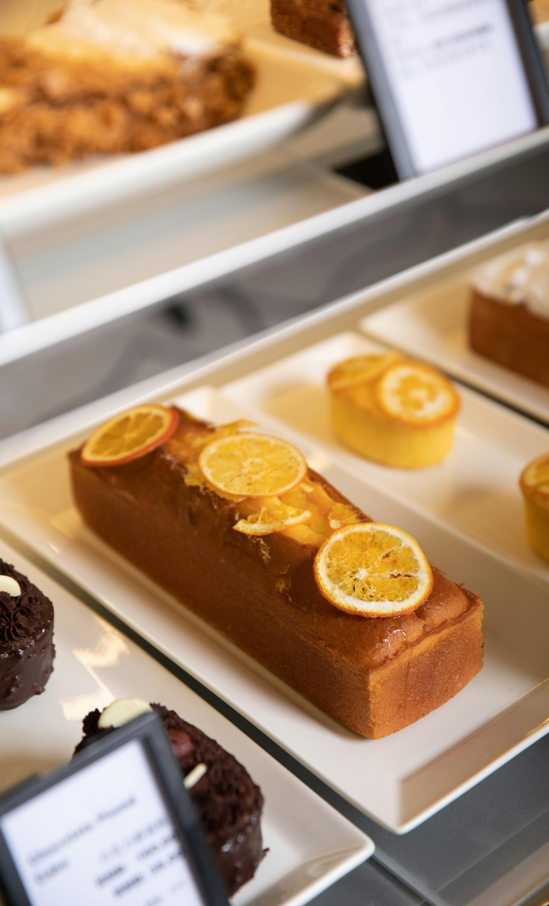
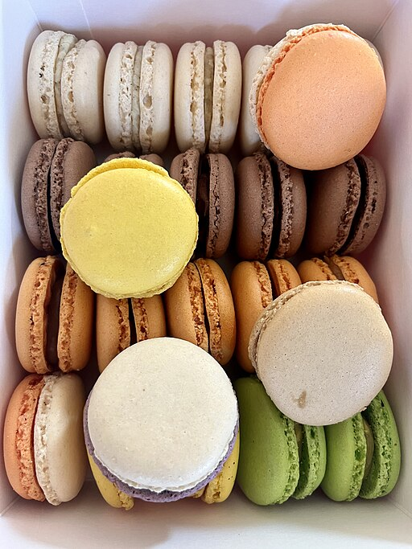
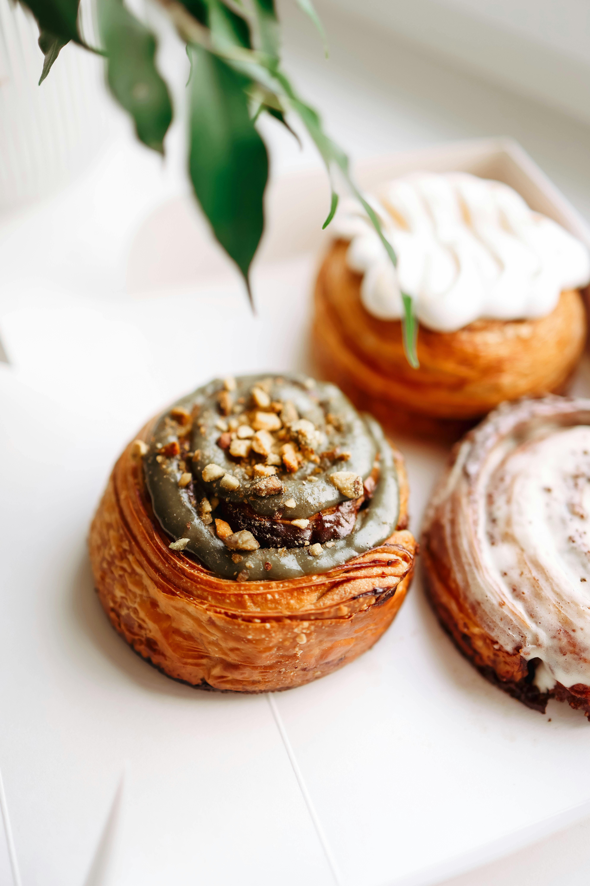

Grain and Honey Bakery
At Grain and Honey Bakery we specialize in artisan breads and pastries. We use grain milled in local mills and source our fruits locally. You can subscribe to our newsletter to learn more about what we're up to.

A sample of what we offer

This is a Ukranian style honey cake. We use local honey in the dough.

We make our lemon cakes with lemons grown in California.

We bake macarons every morning. We have over a dozen flavors and sell the seconds at a discounted price.

This pastry is made from laminated dough with pistachio cream spread on top before it's rolled into a log and cut into pieces.
There is absolutely no substitute for the best. Good food cannot be made of inferior ingredients masked with high flavor. It is true thrift to use the best ingredients available and to waste nothing.
- James Beard
Let us keep in touch!
Subscribe to learn about the new things we're baking!